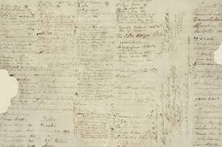
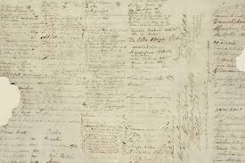

Hobson and others stressed the Treaty’s benefits while playing down the effects of British sovereignty on rangatiratanga (chiefly authority). Reassured that their status would be strengthened, many chiefs supported the agreement. About 40 chiefs, starting with Hōne Heke, signed the Māori version of the Treaty on 6 February. By September, another 500 had signed the copies of the document that were sent around the country. Some signed while remaining uncertain; others refused or had no chance to sign. Almost all signed the Māori text. The Colonial Office in England later declared that the Treaty applied to Māori tribes whose chiefs had not signed. British sovereignty over the country was proclaimed on 21 May 1840.
The Treaty is a broad statement of principles on which the British and Māori made a political compact to found a nation state and build a government in New Zealand. The document has three articles. In the English version, Māori cede the sovereignty of New Zealand to Britain; Māori give the Crown an exclusive right to buy lands they wish to sell, and, in return, are guaranteed full rights of ownership of their lands, forests, fisheries and other possessions; and Māori are given the rights and privileges of British subjects.
The Treaty in Māori was deemed to convey the meaning of the English version, but there are important differences. Most significantly, the word ‘sovereignty’ was translated as ‘kawanatanga’ (governance). Some Māori believed they were giving up government over their lands but retaining the right to manage their own affairs. The English version guaranteed ‘undisturbed possession’ of all their ‘properties’, but the Māori version guaranteed ‘tino rangatiratanga’ (full authority) over ‘taonga’ (treasures, which may be intangible). Māori understanding was at odds with the understanding of those negotiating the Treaty for the Crown, and as Māori society valued the spoken word, explanations given at the time were probably as important as the wording of the document.
Different understandings of the Treaty have long been the subject of debate. From the 1970s especially, many Māori have called for the terms of the Treaty to be honoured. Some have protested – by marching on Parliament and by occupying land. There have been studies of the Treaty and a growing awareness of its meaning in modern New Zealand.
It is common now to refer to the intention, spirit or principles of the Treaty. The Treaty of Waitangi is not considered part of New Zealand domestic law, except where its principles are referred to in Acts of Parliament. The exclusive right to determine the meaning of the Treaty rests with the Waitangi Tribunal, a commission of inquiry created in 1975 to investigate alleged breaches of the Treaty by the Crown. More than 2000 claims have been lodged with the tribunal, and a number of major settlements have been reached.
 
